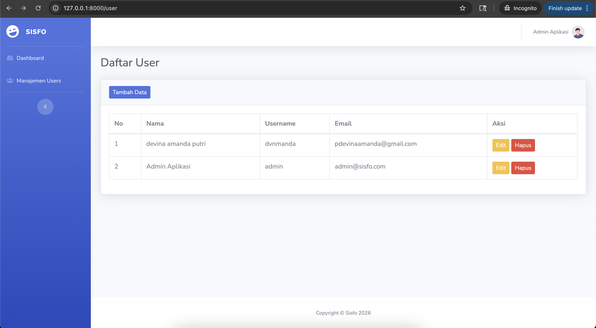
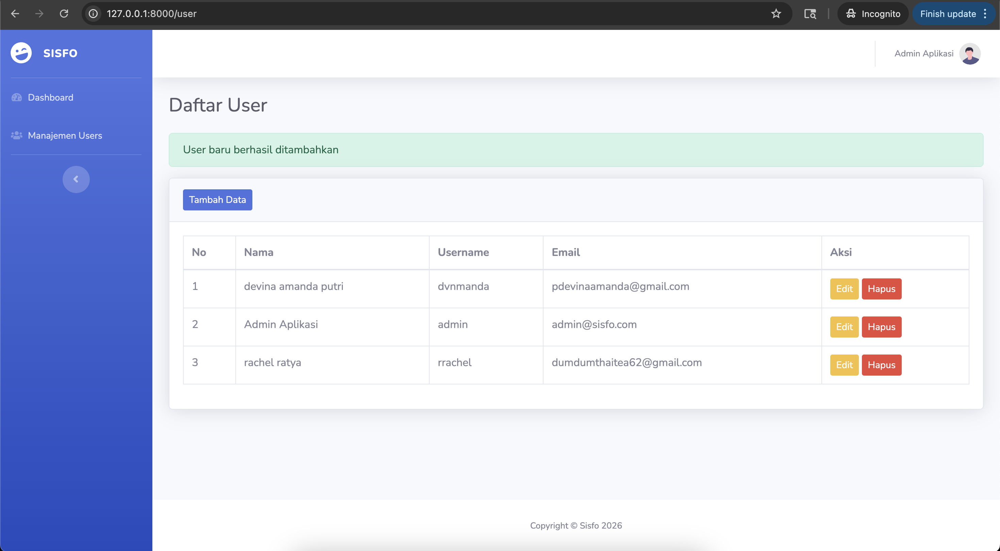
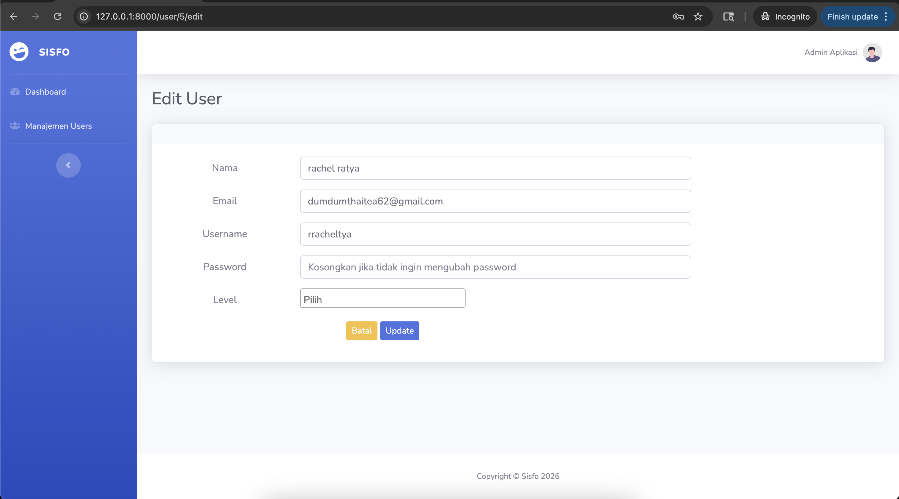
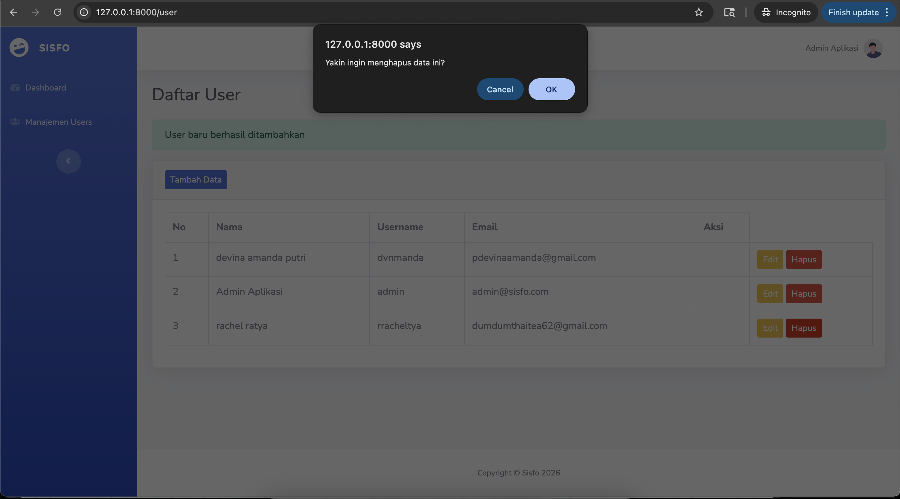
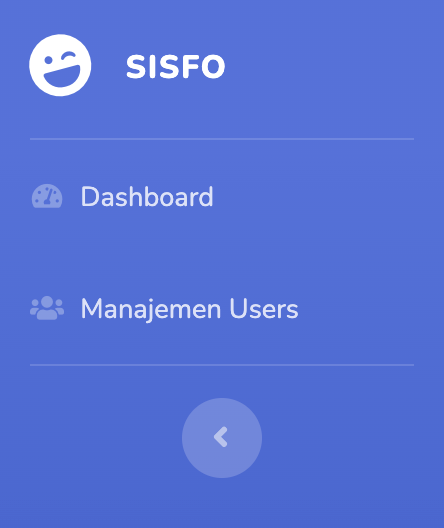

LARAVEL UI BOOTSTRAP DAN TEMPLATING
Praktikum ini berfokus pada tahap implementasi antarmuka pengguna (User Interface) pada framework Laravel memanfaatkan package Laravel UI, integrasi kerangka kerja CSS Bootstrap, serta penerapan teknik Blade Templating Layouting menggunakan tema eksternal SB Admin 2. Pengelolaan visualisasi halaman admin yang dinamis sangat krusial dalam membangun platform berbasis data relasional.
Selain melakukan integrasi dan perombakan layout sistem, praktikum ini juga menerapkan mekanisme penanganan otentikasi pengguna secara instan (User Authentication) bawaan framework serta siklus manajemen pengolahan data pengguna lengkap (CRUD Manajemen Users). Proses ini dijembatani menggunakan Resource Controller untuk efisiensi penulisan arsitektur routing program.
@extends, @section, dan @yield.
Langkah awal yang dilakukan adalah membuka teks editor VS Code pada perangkat Mac, kemudian mengaktifkan **Integrated Terminal** bawaan VS Code melalui pintasan kombinasi tombol Control + ~. Penggunaan terminal internal ini sangat efisien karena path direktori kerja secara otomatis langsung menyasar folder utama workspace pengembangan:
composer create-project laravel/laravel=^9.0 laravel-sisfo --prefer-dist
Setelah Composer berhasil mengunduh dan menyusun seluruh dependensi framework ke dalam folder proyek, jalankan perintah perpindahan direktori ke dalam repositori aplikasi, lalu aktifkan local development server menggunakan Artisan CLI:
cd laravel-sisfo
php artisan serve
Langkah berikutnya adalah menyelaraskan konfigurasi konektivitas basis data relasional MySQL pada file konfigurasi environment .env yang berada di akar direktori proyek:
DB_CONNECTION=mysql
DB_HOST=127.0.0.1
DB_PORT=3306
DB_DATABASE=laravel_sisfo
DB_USERNAME=root
DB_PASSWORD=
Otentikasi pengguna digenerate secara otomatis menggunakan package Laravel UI. Ketikkan perintah penarikan komponen package serta scaffolding otentikasi via terminal berikut:
composer require laravel/ui:^3.4
php artisan ui bootstrap --auth
Setelah aset otentikasi dasar terpasang, lakukan proses instalasi dependensi javascript pendukung UI serta pengeksekusian migrasi fisik tabel bawaan (users, password_resets) ke database MySQL:
npm install && npm run dev
php artisan migrate
Proses penataan layout admin dikerjakan dengan membagi komponen UI SB Admin 2 ke beberapa potongan layout di folder resources/views/layouts/, yang meliputi berkas master layout utama app.blade.php, komponen panel navigasi samping sidebar.blade.php, dan bilah atas topbar.blade.php.
Integrasi pustaka Select2 (CSS & JS) disematkan ke dalam berkas kerangka master utama proyek agar pustaka pilihan level pengguna multi-opsi dapat dimuat di semua halaman administrasi anak:
<!-- Penempatan CSS Select2 pada master template app.blade.php -->
<link href="https://cdn.jsdelivr.net/npm/select2@4.1.0-rc.0/dist/css/select2.min.css" rel="stylesheet" />
<!-- Penempatan JS Select2 sebelum tag penutup body -->
<script src="https://cdn.jsdelivr.net/npm/select2@4.1.0-rc.0/dist/js/select2.min.js"></script>
Modul manajemen pengguna dibangun dengan membuat sebuah Resource Controller bernama UserController untuk menangani seluruh rute RESTful secara otomatis:
php artisan make:controller UserController --resource
Rute didaftarkan pada routes/web.php menggunakan deklarasi tunggal resource:
Route::resource('user', App\Http\Controllers\UserController::class);
A. Menampilkan Tabel Pengguna (Read / List Users)
Logika pemanggilan data di dalam berkas UserController.php ditata dengan menangkap koleksi record model, mengantisipasi kesalahan fatal kurung bawaan modul, dan mengarahkannya ke struktur view anak:
public function index()
{
$user = \App\Models\User::all();
return view('user.index', ['user' => $user]);
}
Visualisasi antarmuka tabel ditata di dalam file resources/views/user/index.blade.php dengan menambahkan kolom Username secara presisi sebelum alamat Email pengguna:
<table class="table table-bordered" id="dataTable" width="100%" cellspacing="0">
<thead>
<tr>
<th>No</th>
<th>Nama</th>
<th>Username</th>
<th>Email</th>
<th>Aksi</th>
</tr>
</thead>
<tbody>
@foreach ($user as $key => $row)
<tr>
<td>{{ $key+1 }}</td>
<td>{{ $row->name }}</td>
<td>{{ $row->username ?? strstr($row->email, '@', true) }}</td>
<td>{{ $row->email }}</td>
<td>...</td>
</tr>
@endforeach
</tbody>
</table>

B. Proses Simpan Data Pengguna Baru (Create & Store User)
Formulir pengisian data dirancang di file user/create.blade.php mengadopsi elemen card shadow beralur POST action. Guna menghindari fungsi usang (*deprecated*) bawaan modul, penangkapan argumen `$request->get()` disederhanakan ke properti dinamis request Laravel:
public function store(Request $request)
{
$user = new \App\Models\User;
$user->name = $request->nama;
$user->username = $request->username;
$user->email = $request->email;
$user->password = \Hash::make($request->password);
$user->save();
return redirect()->route('user.index')->with('status', 'User baru berhasil ditambahkan');
}

C. Proses Mengubah & Memperbarui Data (Edit & Update User)
Formulir penarikan record lama dikirimkan ke dalam berkas user/edit.blade.php yang mengikat masukan data teranyar berbasis metode penimpaan @method('PUT'). Proteksi perubahan kata sandi diterapkan secara kondisional agar password lama tidak terhapus apabila kolom input dikosongkan oleh administrator:
public function update(Request $request, $id)
{
$user = \App\Models\User::findOrFail($id);
$user->name = $request->name;
$user->username = $request->username;
$user->email = $request->email;
if ($request->password) {
$user->password = \Hash::make($request->password);
}
$user->save();
return redirect()->route('user.index')->with('status', 'User berhasil diperbarui');
}

D. Proses Menghapus Data (Delete / Destroy User)
Proses pemusnahan record diatur lewat pengiriman formulir tombol hapus yang mengeksekusi aksi metode destruksi model bawaan pada repositori database:
public function destroy($id)
{
$user = \App\Models\User::findOrFail($id);
$user->delete();
return redirect()->route('user.index')->with('status', 'Data berhasil dihapus');
}

E. Integrasi Menu Navigasi Sidebar
Tahap akhir dari modul dikerjakan dengan mendaftarkan link pemanggilan index modul user pada bilah navigasi kiri di dalam berkas terpisah resources/views/layouts/sidebar.blade.php, mengantisipasi kesalahan tautan penulisan rute jamak bawaan modul dosen:
<li class="nav-item">
<a class="nav-link" href="{{ route('user.index') }}">
<i class="fas fa-fw fa-users"></i>
<span>Manajemen Users</span>
</a>
</li>

Berdasarkan pengerjaan materi modul praktikum ini, kesimpulan yang dapat dirangkum adalah:
Route::resource memudahkan pengembang memetakan fungsionalitas CRUD secara ringkas dan terstandarisasi.